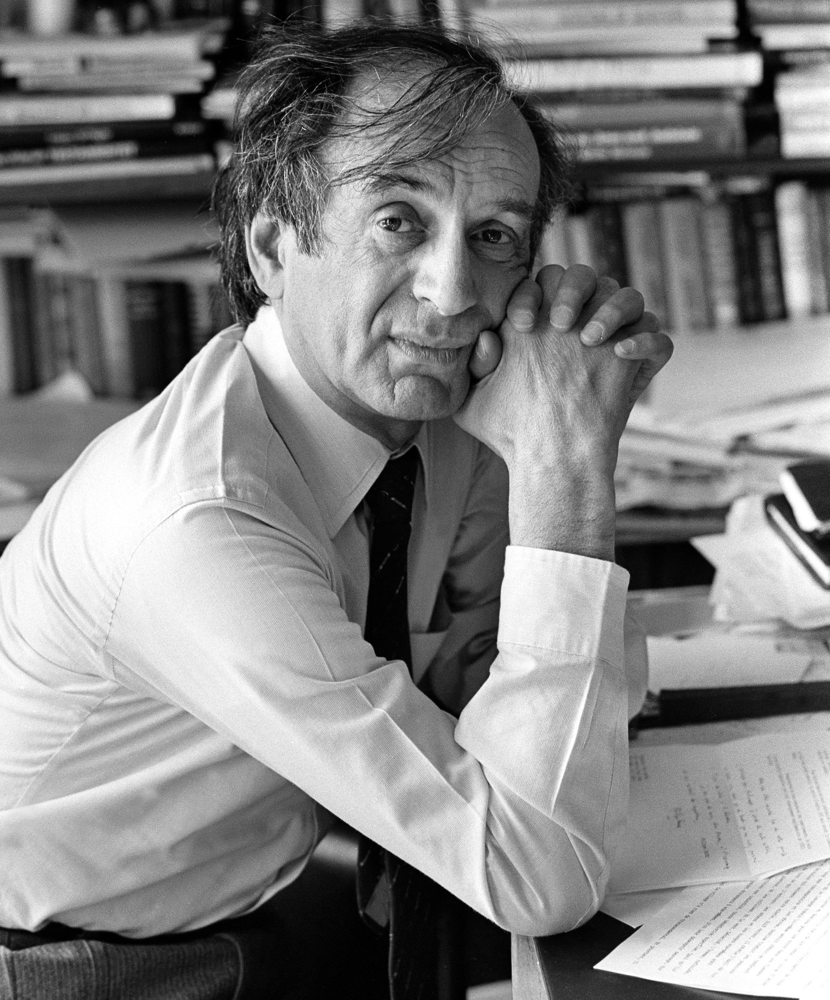
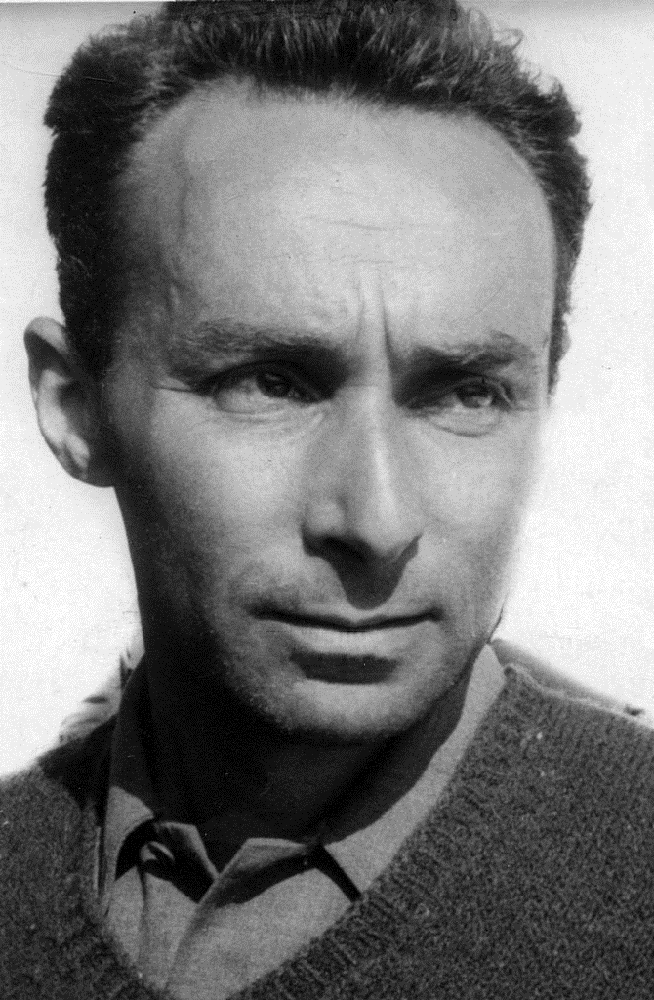
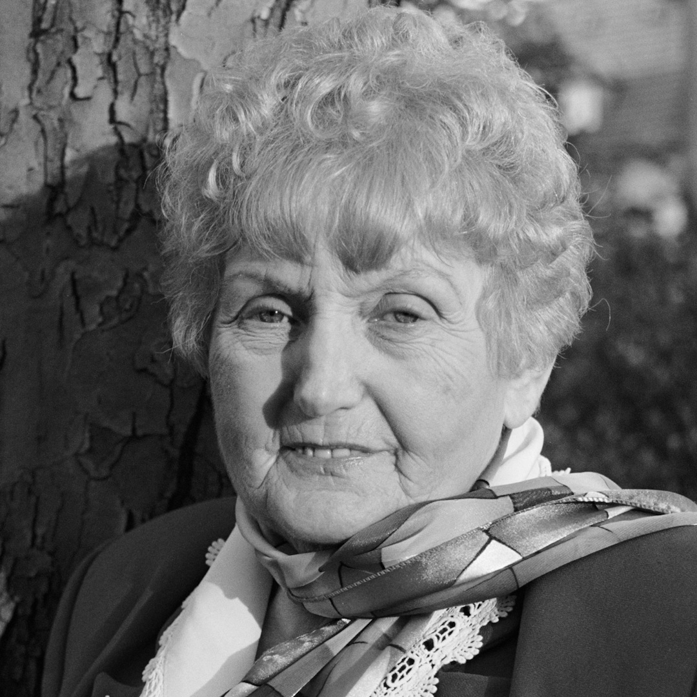
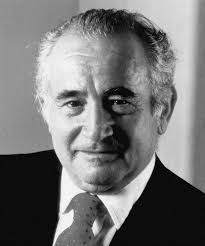
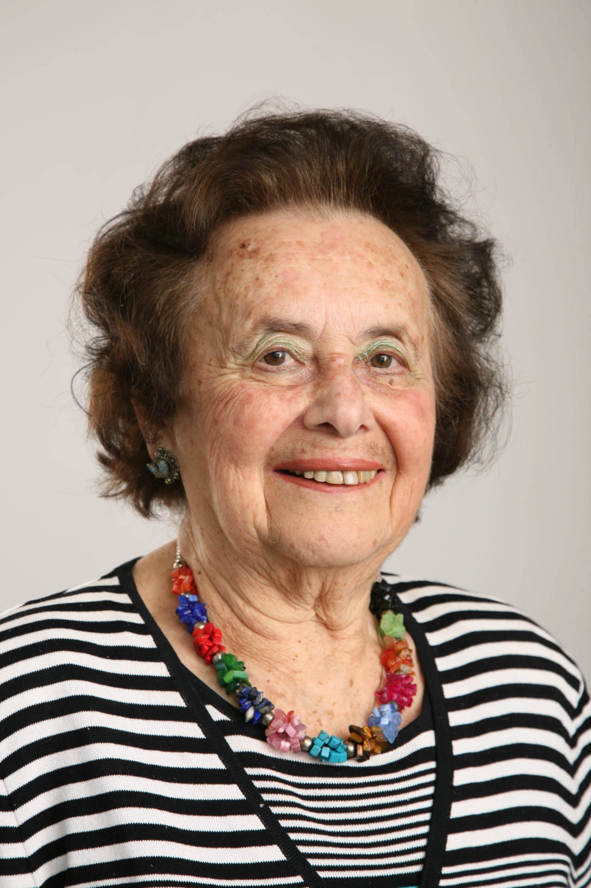

Voices of the Survivors
Survivor stories remind us of the human cost of hate, and the power of resilience. Through their words, we preserve memory and confront denial.
Elie Wiesel
Elie Wiesel was 15 when he was deported to Auschwitz. He lost his mother, father, and younger sister in the camps. After liberation, he became a writer and Nobel Peace Prize winner. His memoir Night became a cornerstone in Holocaust remembrance.
“For the dead and the living, we must bear witness.”
Primo Levi
An Italian Jewish chemist, Primo Levi was deported to Auschwitz in 1944. He survived by working in a synthetic rubber factory. After the war, he wrote If This Is a Man, a searing account of his survival and humanity under dehumanization.
“Monsters exist, but they are too few in number to be truly dangerous. More dangerous are the common men.”
Eva Mozes Kor
Eva and her twin sister Miriam were subjected to experiments by Josef Mengele at Auschwitz. After surviving, she became a fierce advocate for forgiveness and education, founding the CANDLES Holocaust Museum in Indiana.
“Forgiveness is not so much for the perpetrator — it is for the victim.”
Roman Kent
Roman was imprisoned in multiple camps including Auschwitz and Buchenwald. His most famous words — “We do not want our past to be our children’s future” — were spoken at a commemoration ceremony in 2015. He dedicated his life to Holocaust education.
“We do not want our past to be our children’s future.”
Lily Ebert
Deported to Auschwitz with her mother and siblings, Lily Ebert survived and eventually rebuilt her life in the UK. At over 90 years old, she still speaks to students and the public, sharing her story on TikTok with her great-grandson.
“We survived because we never gave up. We knew we had to tell the world.”